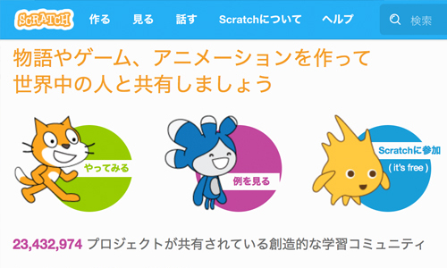
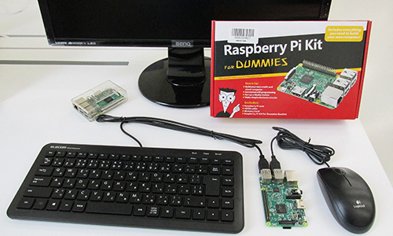
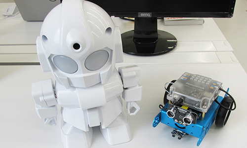

栃木県 さくら市 ／ 矢板市
「CoderDojo」は、7歳から17歳の子どもを対象にした、プログラミング道場です。2011年にアイルランドで始まり、現在では世界110か国・2000以上の道場があり、日本では221以上の道場があります。
「CoderDojo」は「無料」「ボランティア主導」「コミュニティベース」で運営されています。
Dojoに参加すれば、気軽に、クリエイティブに、みんなと交流しながら、コードのこと学習したり、自分のウェブサイトを構築したり、好きなアプリやゲームを作ったり、興味のある技術を調べたりできるでしょう。
参加者を「ニンジャ」と呼び、参加者のガイド役となる人を「メンター」と呼びます。
「CoderDojoさくら」は、栃木県さくら市を拠点として2017年7月に活動を開始した道場です。
子どもたち一人ひとりの自主性・創造性を大切にして、プログラミングの楽しさを多くの子供たちや保護者の皆さまと共有し、ともに楽しみながら成長できる場所にしていきたいと思います。
Scratch
RaspberryPi
ロボット
その他、Java,PHP,HTML,cssなど
第４２回
日時： 2022年5月22日（日）10:00～12:00
会場： HCCソフト（株）研究開発センター（旧矢板西小学校） （会場案内）
参加費用：無料
参加資格：小学生から高校生までのプログラミングに興味がある方
持ち物：ノートパソコン（ひとり１台持参してください）
第４３回
日時： 2022年6月26日（日）10:00～12:00
会場： HCCソフト（株）研究開発センター（旧矢板西小学校） （会場案内）
参加費用：無料
参加資格：小学生から高校生までのプログラミングに興味がある方
持ち物：ノートパソコン（ひとり１台持参してください）
新型コロナウィルスの感染拡大防止のため、以下の注意事項を守ってください。
●参加する方は、必ずマスクを着用してください。また、咳エチケットを守るようにしてください。
●会場の入り口に消毒液を準備しますので、必ず手指の消毒を行ってください。
●申込フォームに連絡先の電話番号を追加しましたので、当分の間、連絡先電話番号を必ず入力するようにしてください。
●下記①から④のいずれかに該当する人は参加を控えてください。
①基礎疾患のある人など、感染すると重症化する恐れが高い人
②利用の当日に風邪の症状がある人
③過去２週間以内に発熱や風邪の症状で受診や服薬等をした人
④過去２週間以内に海外から帰国（入国）した人
小学生は、保護者の方が送り迎えをお願いします。
お申込みは、保護者の方が行ってください。